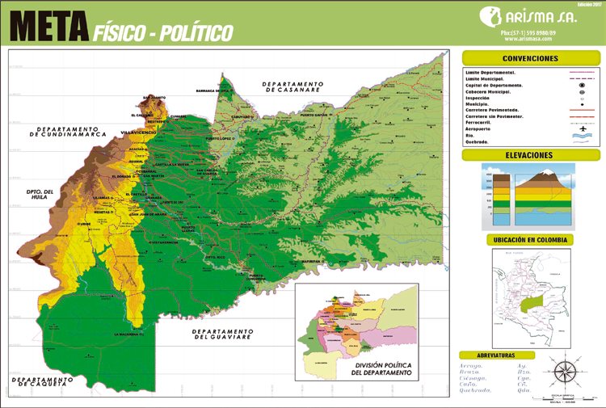

Meta

Zonas Turísticas
- Caño Cristales
Conocido como "el río de los cinco colores", es uno de los más hermosos del mundo.
- Parque Nacional Natural Sierra de La Macarena
Reserva natural con gran biodiversidad y paisajes únicos.
- Laguna de Lomalinda
Hermoso cuerpo de agua ideal para la observación de aves y la pesca.
- Río Guayabero
Ofrece actividades como pesca, rafting y avistamiento de fauna.
- Termales de Aguas Calientes
Fuente natural de aguas termales con propiedades medicinales.
- Puente Natural
Formación rocosa única que es un atractivo geológico.
Comida Típica
- Ternera a la llanera
Carne asada en estacas sobre brasas, acompañada de yuca y plátano.
- Hallacas
Similar al tamal, elaborado con masa de maíz y relleno de carne.
- Sancocho de gallina criolla
Sopa espesa con gallina, plátano, yuca y mazorca.
- Carne oreada
Carne salada y secada al sol, típica de los llanos.
- Queso campesino
Queso blanco y suave, ideal para acompañar las comidas.
Sector Económico
- Petróleo
Importante sector con explotación de hidrocarburos en la región.
- Ganadería
Cría de ganado bovino, base de la economía llanera.
- Agricultura
Producción de arroz, plátano, yuca, maíz, cacao y palma de aceite.
- Turismo
Desarrollo del ecoturismo en lugares como Caño Cristales y La Macarena.
- Comercio
Intercambio de productos agrícolas y ganaderos con otras regiones del país.